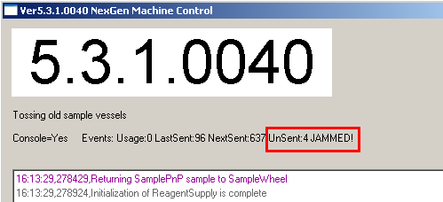
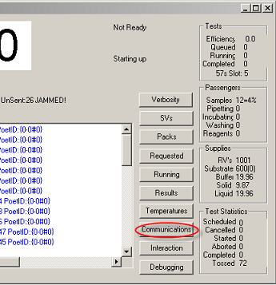
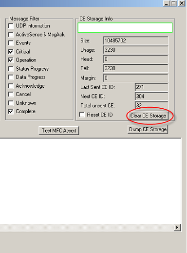
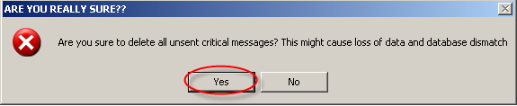
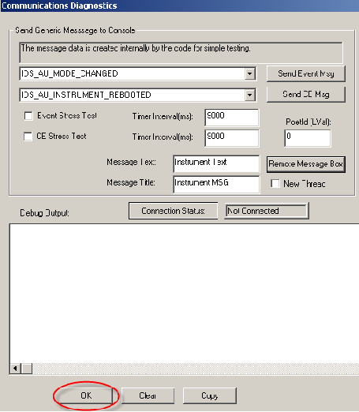
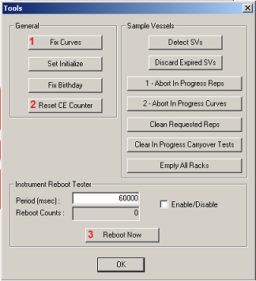
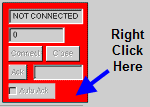
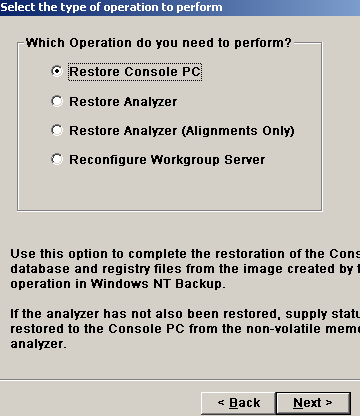

Database - Clearing Jammed Critical Events on Windows 10
This procedure describes how to clear jammed messages between the DxI AU and the Windows 10 console PC.
Use this procedure when:
The software installation stops with an error message Unsent Data stored or there are jammed critical events on the AU side preventing software to load on the Instrument. This can occur when the AU side already had software installed and AUObject or NexGen Machine Control application is running.
After launching the user interface, the instrument status does not transition from the red
No message status or
Initializing status to the blue
Ready status, the green
Running status, or the yellow
Paused status.
The
Configuring Parameters message does not complete after more than 5 minutes.
Initialization in Progress message occurs after more than 3 minutes.
No communication to Instrument message occurs. This message can occur when the machine control program on the AU is not running (program exited because of a hardware, sample, or reagent issue).
Instrument Communication Module Warning message occurs. This message can also occur when there are multiple critical message jams.
The user interface exits spontaneously while initializing.
Jammed communication between the instrument and the PC database can happen when the instrument attempts to send a message with an event ID smaller than what the database expects. The database does not accept a critical event message from the instrument that has an event ID lower than the ID of the last event received. The ID mismatch can happen when the ComCE.dat file is deleted to facilitate software loading, the database is corrupted, or the database is replaced with an older copy during troubleshooting.
Illegal supplies on the instrument can cause some critical event message jams. The database refuses the supply status message or lock-ups when the message is received and refuses any subsequent messages. An illegal supply can be an onboard reagent from an assay that was deleted from the database by an APF update, or by a canceled substrate bottle. For substrate issues, confirm the operation of the loader door and bottle present sensor. For reagent issues, refer to the Restore From Backup section of this procedure.
Open a connection between the console PC and the AU.
Press the
Windows key, type
remote, and open the Remote Desktop Connection program.
The remote desktop connects to the instrument computer and allows remote control of the instrument and applications. When connected, the
Remote Desktop window displays the Desktop of the instrument.
Type in
192.168.2.4 into the Computer field and select Connect.
Enter
user for User Name and
tech for the password if prompted.
If prompted at the RDS warning screen, check the box for "Don't ask me again for connections to this computer" and select
Yes.
Note: The default console IP address is 192.168.2.3 and the AU IP address is 192.168.2.4. Neither IP address changes during the software load process.
To switch between the console PC display and the AU display, use the standard Windows
ALT+Tab command or the following:
To return to the console PC display, use the minimize button at the top of the
AU Desktop screen.
To restore the
AU Desktop screen, press the
Windows key, type
remote, and open the Remote Desktop Connection program.
In the connection to the AU, confirm the instrument message status (confirm the presence of unsent messages or jammed critical events).
Disregard and close any error messages on the instrument desktop.

If there are no unsent messages (all messages have been sent), exit the user interface and reorganize the database.
If there are unsent messages, then choose one of the following options.
If system fails to load software due to Unsent Data stored or jammed critical events, then continue to the step 3 to clear the unsent messages and reinstall software.
If system has jammed critical events, then minimize the desktop sharing screen and continue to step 4 to clear the unsent messages.
(Perform this step only if software fails to load or install with unsent data stored or critical events error) Clear UnSent message on the NexGen Machine Control application.
Note: If the NexGen Machine Control is not present, then shut down or exit AUObject
Y icon on the task bar and relaunch AUObject
Y icon short cut on the AU desktop. Task Manager can also be use to terminate the AUObj.exe or AUModule program.
On the NexGen Machine Control pop up box, select
Communications option.

On the Communications pop up box, select
Clear CE Storage > Yes.
Note: The Clear CE Storage option is located in the middle right side of the pop box.


Select
OK to exit the Communications pop up box.
Note: The OK option is located in the bottom left of the pop box.

Verify the Unsent message is zero and reload system software.
Note: If system software installs successfully, no further step in this procedure requires. If software still fails to install due to unsent stored data, then repeat step 3.
Open the Database Utilities function.
Press
Windows key, select DbTest UD icon or type
DbTest
and open the program.
In the
DbTest
window, select
Database.
Figure 411: DxI DbTest
If the
Database icon is not active, then use these steps to enable the
DevDbTest option in the registry:
Exit
DbTest.
Press
Windows
key, type
regedit, and open the Regedit program.
Navigate to
HKEY_LOCAL_MACHINE\SOFTWARE\WOW6432Node\BECKMAN\NexStep.
Right-click on
DevDbTest, select
Edit, and then change the number 0 to
1.
Open the
DbTest UD program.
Select
OK to the
Open Poet Database pop-up.
Use Tools from DbTest to clear critical event messages.
Note: Use any feature other than Tools can damage the database.

Select
Tools from the bottom of the
DbTest window.
Select
Fix Curves > OK.
Note: This option corrects curve objects in the database.
Select
Reset CE Counter > OK.
Note: This option resets the Last Critical Event ID entry in the database.
Select
Reboot Now to reboot the instrument.
Note: Reboot Now option will automatically reboot the instrument and does not require to turn off or on the power button on the instrument. This option will not work if there is no communication between the instrument and the console PC.
Select
OK on the bottom of the Tools box to exit the box.
Exit DbTest.
When instrument starts initializing, relaunch the user interface.
Double click on the
NexGen Application shortcut on desktop, or press
Windows key, select
NexGenUI UD icon or type
nexgenui and open the program.
Open the Desktop Sharing to AU side and confirm that the unsent message status is counting down.
If the unsent messages are clear, then proceed to verification.
If the unsent messages remain, then use the AU Comm Test program to acknowledge instrument critical event messages.
Use the AU Comm Test program to acknowledge instrument critical event messages.
Note: This procedure acknowledges (discards) individual messages from the instrument that might be blocking subsequent messages.
Launch AU Comm Test application.
Press
Windows key, select
AU Comm Test icon or type
au comm test and open the program.
Note: The instrument must be powered on and the user interface open.
Right-click anywhere on the red area of the connection box in the
AUComTest window to open a AU IP address pop-up.
Note: Right-clicking anywhere on the red portion of the box causes an AU IP address pop-up.

Enter the AU IP address
192.168.2.4, and then select
OK.
Select the
Connect button.
The red box changes to a green box.
Select the
ACK button to acknowledge the displayed critical event ID and clear the first critical event message from the queue.
Note: The critical event ID is displayed in the dialog box.
Return to the
AU desktop and confirm that the unsent message status is counting down.
If the unsent message count is not counting down, then select the
ACK button to acknowledge additional critical events.
Note: After the critical events that were jamming the queue are removed, the remaining critical events process normally, and user interface status is either in not ready or ready mode.
If the system is in ready mode, then
Exit the AU Com Test and Desktop Sharing.
Initialize the system with
Clean Out All Positions and
Remap selected.
If the system is in not ready mode, then
Exit the AU Com Test and Desk Sharing.
Initialize the system with
Clean Out All Positions and
Remap selected.
If the user interface status is still red and blank or there are unsent messages shown on the AU NexGen Machine Control box, then only exit the AU Comm Test and proceed to the next step.
Correct jammed critical events using the restore utility.
Create an immediate backup, but stop writing files to the USB drive by selecting
Cancel when the
Backup Status window is displayed.
The restore utility moves the backup files from the backup folder to the working directories on the PC and updates the reagents using the counts stored in the AU hard drive. The restore utility does not use the database on the USB drive.
Press
[Alt] + [F4], and then enter the password
Access2Support.
If necessary, exit the Fast Objects Server.
Press
Ctrl + Alt + Delete and select
Task Manager or right click on the task bar and select
Task Manager.
In the
Task Manager box, click on
Processes, select
FastObjects Server and click on
End Task in the bottom corner of the box.
Close any error messages.
Press
Windows key and select
Restore Utility icon or type
restore utility and open the program.
Note:
When restoring onto a new PC or PC hard drive, load the software first to make the restore utility available.
Before you begin the restoration, confirm the user interface has been exited and the instrument remains powered on.
In the Restore Utility, select
Next
> Restore Console PC > Next.

Select
Restore Registry and Database > Next.
Note: If there is an error copying the files, confirm that you have exited the POET object server, and then retry restoration.
Select
Next to the IP address information.
Note: An incorrect AU or server IP address in the registry causes an error during restoration. The typical IP addresses are:
Console PC 192.168.2.3.
Workgroup server 192.168.2.3.
AU 192.168.2.4.
Select
Restore Supplies From Analyzer > Next. If a delete reagent dialog window is displayed, select
Next.
Note: You do not need to delete reagent packs. Because an immediate backup was restored, both punctured and unpunctured packs are accurate in the database.
Note:
Files are copied and the instrument is rebooted.
The AU must be powered on and able to communicate on the TCP/IP network during the restoration.
An incorrect AU or server IP address in the registry creates an error at this step.
Select
Finish with
Reboot.
Note: When restoration is finished, the console PC and the AU automatically reboot and the user interface launches. During the reboot, the instrument might seem not to communicate for up to 5 minutes.
Note: When rebooting the Privacy & Security compliant Windows 8 or Windows 10 PC, you must enter security password "Access2Admin" when prompted to launch Windows.
After the user interface launches,
If the instrument status is
Ready orNot Ready, then proceed to verification.
If the instrument status does not transition from the
No message or
Initializing status to either the
Ready,
Running, or
Paused status within 5 minutes:
Use Desktop Sharing to confirm that the machine control program is running.
Repeat Step 3 and 4 to reset the Last Critical Event ID entry in the database.
Verify system operation.
Press[Alt] + [F4], and then enter the password
Access2Support.
Relaunch the user interface.
Double click on the
NexGen Application shortcut on desktop, or press
Windows key, select
NexGenUI UD icon or type
nexgenui and open the program.
Check the
Sample Manager In-Progress screen, and confirm that there are no test replicates in-progress.
Initialize the system with
Clean Out All Positions and
Remap selected.
Warning: Reagent pack count mismatch may occur if the "Reset Critical Event Count" tab or "Ack Messages" tab are performed prior to "Restore From Backup." A successful Restore from an Immediate Backup will correct the database with the accurate reagent pack counts. Discard punctured reagent packs if unsure of their status.
Warning: The remap process updates the instrument reagent pack information with information from the user interface. If the database does not contain use history for the on-board packs, then all on-board packs are reset to full.